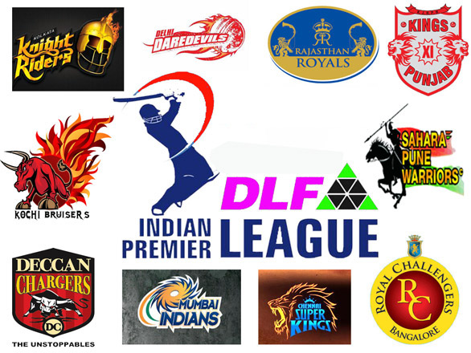

There was a lot of speculation surrounding the captain of IPL franchise Kolkata Knight Riders, and the team had quite a few senior players in their ranks to choose their leader from. Finally on Sunday, team CEO Venky Mysore announced Dinesh Karthik as the new skipper of KKR for IPL 2018. KKR Squad: Dinesh Karthik (C), Robin Uthappa (VC), Sunil Narine, Andre Russell, Chris Lynn, Mitchell Starc, Kuldeep Singh Yadav, Piyush Chawla, Nitish Rana, Kamlesh Nagarkoti, Shivam Mavi, Mitchell Johnson, Shubman Gill, Ranganath Vinay Kumar, Rinku Singh, Cameron Delport, Javon Searless, Apoorv Vijay Wankhade, Ishank Jaggi
"I think the thing that stood out is that DK is at the age now in his career where he's got the best years of his career in front of him," assistant coach Simon Katich told Star Sports. "He's been involved in the IPL for 10 years. He's got a fantastic domestic record captaining Tamil Nadu in the T20 tournament there. I think he's got a 72% win-rate which is outstanding as a T20 skipper."
Revealing the skipper on a TV show on Star Sports, Mysore said the principal reason for selecting Karthik was that they were looking for a long-term change, and someone who could fill Gautam Gambhir's boots.
Mysore said,"The principal we operated on was that we were looking for a long-term change. We were looking at someone who could continue to lead the side like Gautam."
Some of the other senior players like Chris Lynn and Robin Uthappa perhaps were the other contenders for the job. The latter was appointed Karthik's deputy.
Dinesh was bagged for a massive Rs 7.4 cr by the franchise in the IPL auctions in January. After being chosen the the skipper, Dinesh said, " KKR has done well consistently in the last ten years. The team has a great legacy. I am really happy and honoured to lead this side."
The new skipper further added, "We have a good blend of youth and experience. We are looking forward to work under coach Jacques Kallis. All the foreign players are really good too. I will try to take the team forward from where Gautam Gambhir left."
KKR, this season boasts of a strong bowling line-up that will be led by Australian pacer Mitchell Starc. Also in their ranks they have new India sensation Kamlesh Nagaroti, who impressed everyone in the U-19 World Cup. If at all, lack of depth in the batting department could be a challenge for the team.

Karthik takes over from Gautam Gambhir, who is the Knight Riders' leading run-scorer and took them to two IPL titles in 2012 and 2014. Venky Mysore, the CEO of the franchise, said they were keen to retain Gambhir for the 2018 season as well but the player had asked for a fresh start. It appears KKR are also chasing the same by putting a man who is yet to make his debut for them as their captain.
"The team that Gambhir led in the last seven years, I think he's done a fabulous job. "Karthik said. "He's left a sort of legacy which is the kind of thing I'd like to do, where you leave the team in good hands, and you take a team that was probably doing well and take it to a different level altogether. I would definitely like to be a part of that journey."
Knight Riders went all out to pick up the lynch pins of India's Under-19 World Cup winning squad - Shubman Gill (approx USD 281,000), Kamlesh Nagarkoti (approx USD 500,000) and Shivam Mavi (approx USD 468,000) - and Karthik was keen to see how they fare in the IPL. "It's a very young side. There are few very interesting talents from the India Under-19s that we've picked up. I'm really looking forward to meeting them, interacting with them and getting the best out of them."
Uthappa, the 32-year old who has played for the Knight Riders since 2014, might have missed out on the chance to lead them on account of limited captaincy experience. He has been at the helm of eight T20 matches, whereas Karthik's corresponding figure is 18.
"To come in at this role is really exciting for me," Uthappa said. "I've been able to add value to the team in the past in different scenarios in different forms. This gives me a more direct impact within the decision-making group so I hope to be adding the kind of value that bring us championships.
"I'm sure all of Kolkata will be right behind DK, as will I and as will the rest of the team. I'm going to be available to DK anytime he needs me, always ready to share my inputs. DK and I have known each other since our Under-17 days, so looking forward to working with